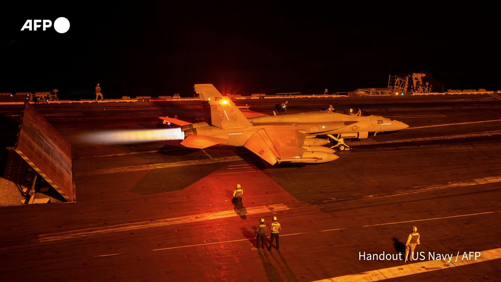
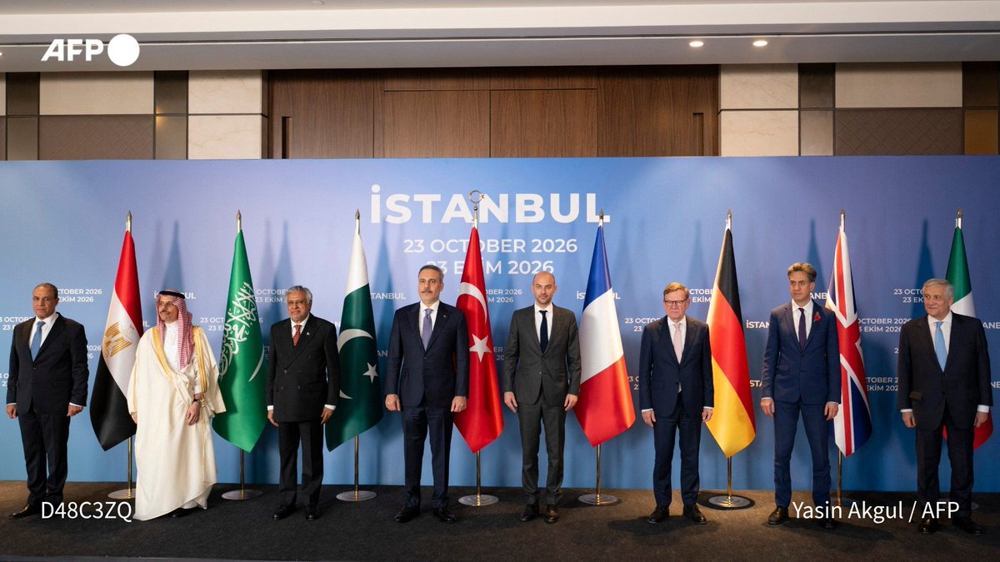
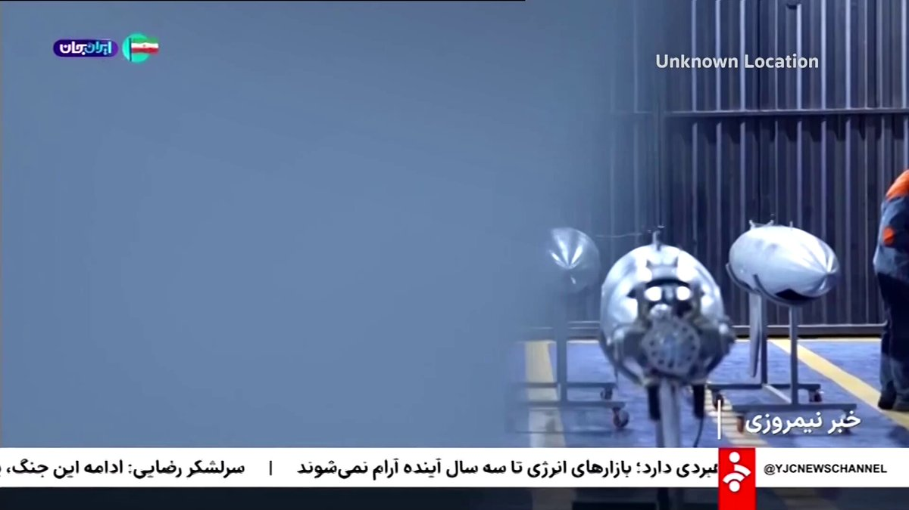
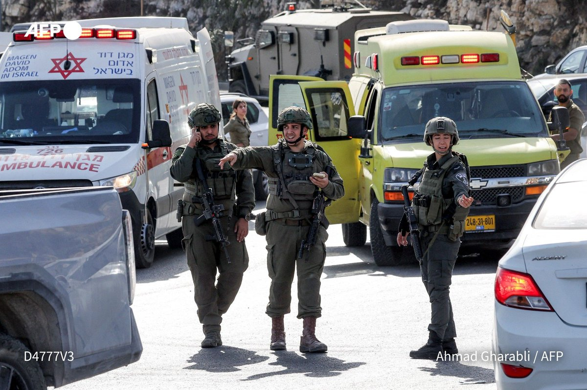
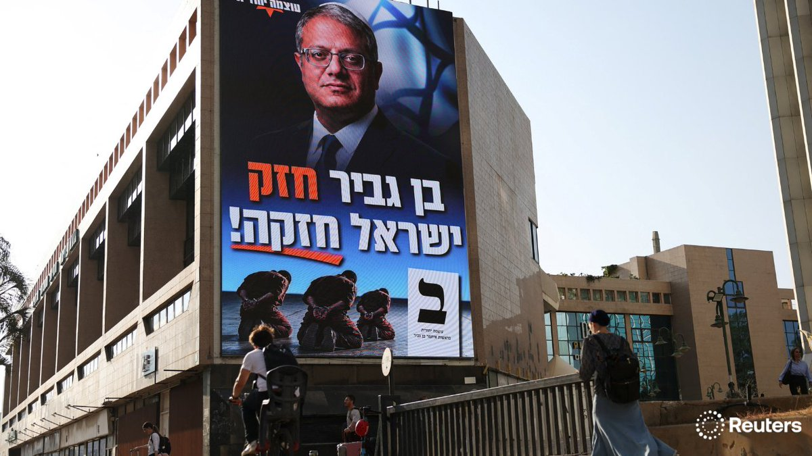

⚔️ Talk of renewed strikes dominated. Reuters reports Trump said the US may carry out another military operation against Iran, and is weighing a quick end to the war against letting it "wither". AFP says the US appears to be preparing large-scale strikes, though experts see no military solution for either side.
🛢️ Oil climbed above $114 a barrel on those reports. Reuters says ship attacks in the Strait of Hormuz hit a record high in October, and the BBC reports an oil spill washing up on UAE beaches after a tanker strike.
🌍 Diplomacy: foreign ministers from eight European and Middle Eastern countries met in Istanbul on Hormuz, and Turkey warned a renewed attack would widen the conflict. Iranian state TV aired footage it says shows an underground drone factory.

📷 AFP · Istanbul talks
📷 Reuters · Iran drone site footage
🔇 No new Gaza or Hamas updates from the watched accounts in the last 24 hours.
🚨 The West Bank was the story. AFP says Palestinian militants wounded five Israelis before being killed in a shootout with soldiers, and Netanyahu ordered a West Bank lockdown days before the election. AP, citing Israel's army, says two Israeli soldiers and two suspected gunmen were killed in an attack. Italy called for Israel to release five activists it holds there.
🗳️ Ahead of Tuesday's vote, Reuters looks at why first-time voters are boosting far-right Itamar Ben-Gvir. Barak Ravid amplified Israeli reporters saying Netanyahu declared US security aid "over" and told Israel to prepare for banking sanctions.

📷 Reuters · Ben-Gvir's young voters